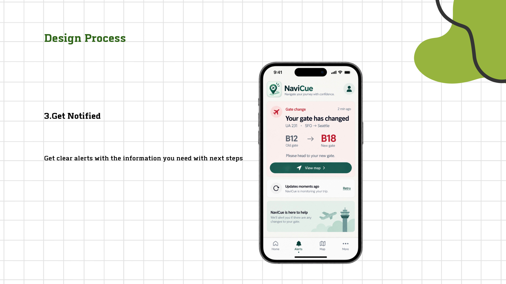
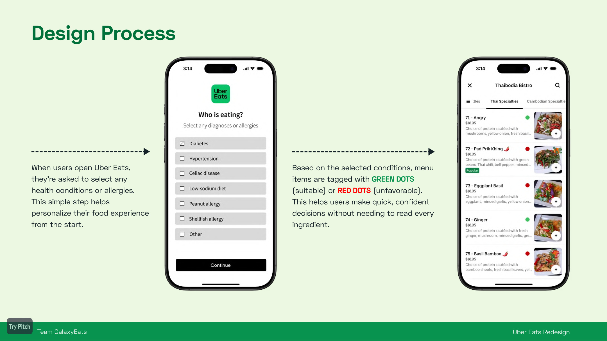
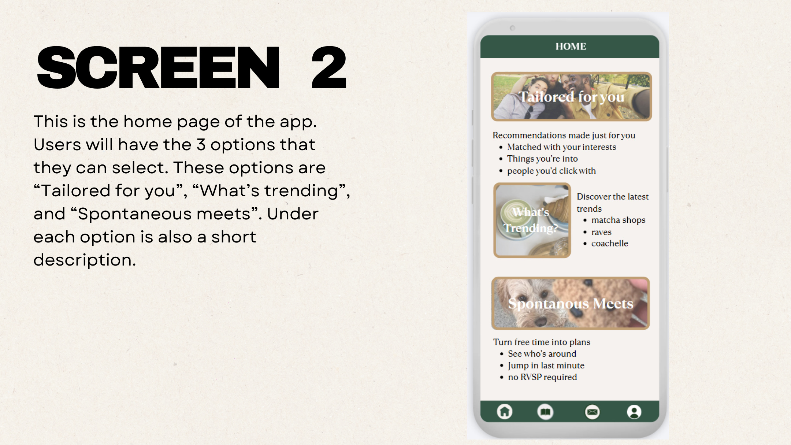

01 · ACCESSIBILITY
NaviCue
A travel companion concept for Deaf and hard-of-hearing travelers that turns important trip changes into personalized, visual, actionable updates.
View case study →
UX/UI & PRODUCT DESIGN
Cognitive Science student at UC Berkeley exploring UX/UI, product design, accessibility, and the ways technology can better support people.
See my work ↓SELECTED WORK
A travel companion concept for Deaf and hard-of-hearing travelers that turns important trip changes into personalized, visual, actionable updates.
View case study →
An Uber Eats redesign exploring clearer ingredient information, health-based filters, warnings, and meal guidance for people with allergies and chronic health needs.
View case study →
A social app concept designed to make meeting new people feel less intimidating through personalized events, spontaneous meetups, and group-based connections.
View project →
ABOUT
I’m a Cognitive Science student at UC Berkeley and a Junior Designer at UX@Berkeley. I’m interested in understanding how people think, what makes an experience confusing or frustrating, and how design can make it clearer.
My background in math, technology, teaching, and visual creativity shapes how I approach problems: with curiosity, structure, and empathy.
EXPERIENCE
LET’S CONNECT
I’m currently exploring UX/UI and product design opportunities.